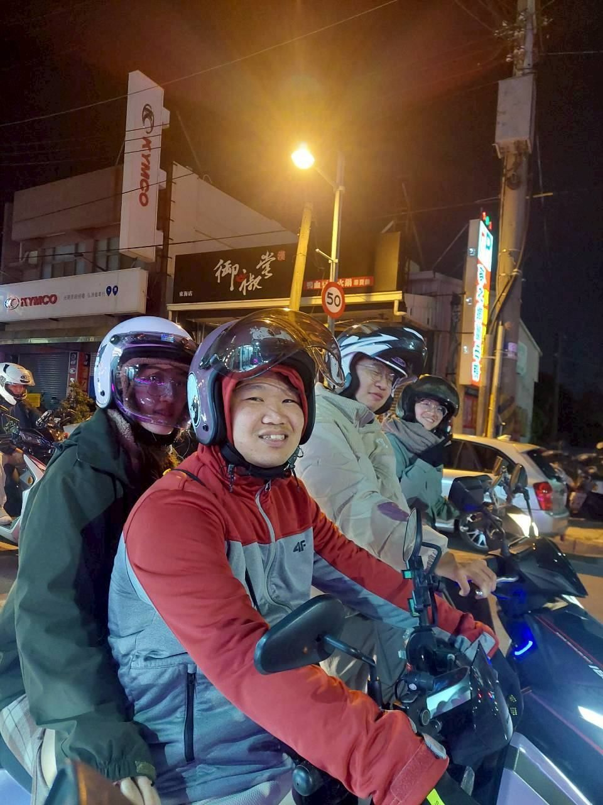

每天都有「傳福音特攻隊」在隊長帶領下外出傳福音，結束後一起報告。2023 年 1 月開始記錄，到 2026 年 9 月為止的累計：매일 '전도 특공대'가 대장의 인도로 전도하러 나가고, 마친 뒤 함께 보고합니다. 2023년 1월 기록을 시작한 뒤 2026년 9월까지의 누적입니다.
每天傳福音매일 전도
傳福音特攻隊전도 특공대
每天晚上都有特攻隊在隊長帶領下外出傳福音，結束後一起報告。매일 저녁 특공대가 대장의 인도로 전도하러 나가고, 마친 뒤 함께 보고합니다.
週一월天王 隊長대장
週二화俊耀 隊長대장
週三수筱晴 隊長대장
週四목育蓁 隊長대장
週五금彥宇 隊長대장
週六토明薇 隊長대장
主日주일宗豫 隊長대장
「務要傳道，無論得時不得時，總要專心。」提摩太後書 4:2"너는 말씀을 전파하라 때를 얻든지 못 얻든지 항상 힘쓰라"디모데후서 4:2
218,937傳福音次數전도 횟수
264,319遇見的人만난 사람
22,218對話的人대화한 사람
5,294交換 LINELINE 교환
637來到教會（1 次以上）교회에 온 사람(1회 이상)

遇見的人만난 사람
264,319
傳福音次數전도 횟수
218,937
對話的人대화한 사람
22,218
交換 LINELINE 교환
5,294
來教會（1 次以上）1회 이상 출석
637
橫條使用對數尺度，讓 637 人與 264,319 人能在同一張圖上看見。막대는 로그 눈금입니다(637명과 264,319명이 한 그림에 함께 보이도록).
每一季的傳福音次數분기마다의 전도 횟수
7,487Q1
7,487Q2
7,487Q3
15,578Q4
14,448Q1
18,465Q2
16,528Q3
21,247Q4
16,848Q1
18,487Q2
20,192Q3
18,898Q4
–Q1
18,782Q2
17,004Q3
2023202420252026
2023 年 1–9 月只有合計（22,460 次），以斜線柱顯示每季平均。2026 年 1–3 月尚無資料。2023년 1~9월은 합계(22,460회)만 있어 빗금 막대로 분기 평균을 표시했습니다. 2026년 1~3월은 자료가 아직 없습니다.
20231–12 月1~12월
傳福音전도
38,038
遇見만남
48,708
對話대화
9,827
LINE
2,372
來教會출석
215
年底把每週目標從 700 次提高到 1,400 次，週五也有了特攻隊。연말에 주간 전도 목표를 700회에서 1,400회로 올리고, 금요일에도 특공대가 생겼습니다.
20241–12 月1~12월
傳福音전도
70,688
遇見만남
82,799
對話대화
7,473
LINE
1,747
來教會출석
207
教會附近約 5 萬居民，幾乎每個人都聽過福音。聖誕節來了 29 位新朋友。교회 주변 주민 약 5만 명, 거의 모두가 전도를 받아 보았습니다. 성탄절에 새 친구 29명이 왔습니다.
20251–12 月1~12월
傳福音전도
74,425
遇見만남
90,066
對話대화
3,672
LINE
830
來教會출석
163
約 20 位弟兄姊妹一年傳了 7 萬多次。開始每月一次的街頭敬拜（Busking）傳福音。교회 20여 명이 한 해 7만 번 넘게 전도했습니다. 한 달에 한 번 거리 찬양(버스킹) 전도를 시작했습니다.
20264–9 月4~9월
傳福音전도
35,786
遇見만남
42,746
對話대화
1,246
LINE
345
來教會출석
52
改以「對話次數」為目標後，對話人數從 7 月的 101 人增加到 9 月的 300 人。'대화 횟수'를 목표로 바꾼 뒤, 대화한 사람이 7월 101명에서 9월 300명으로 늘었습니다.
一小時規則：目標是「談了幾次話」한 시간 규칙: 목표는 '몇 번 대화했나'
多年來以「遇見次數」為目標，但許多人只急著達標。在門徒訓練班的討論中，一位弟兄提議改以「對話次數」為目標：主日一組兩人完成五次對話即算完成，但一定滿一小時才結束 — 繼續傳，或在便利商店喝茶交通。效果立刻出現。여러 해 '만남 횟수'를 목표로 했지만 많은 사람이 목표 달성에만 급급해졌습니다. 양육반 토론에서 한 형제가 '대화 횟수'를 목표로 하자고 제안했습니다. 주일에 한 조 두 사람이 다섯 번 대화하면 완료하되, 반드시 한 시간을 채웁니다 — 계속 전도하거나 편의점에서 차를 마시며 교제합니다. 효과는 바로 나타났습니다.